速览
多数游戏让人从 Easy/Normal/Hard 中选难度。樱井在《新·光神话 帕尔提娜之镜》中做了「恶魔之釜」：开始关卡时设置认真度（Intensity），基准 2.0；往釜里投入红心（游戏内货币）可以一路调高，最高 9.0。认真度越高，敌人越凶、攻防越强，需要准备和策略；但通关后能得到更多红心、更强的神器和奇迹。失误会洒掉一点釜中的红心，继续时难度下降，但投入的红心浪费了一些、好奖励也更难拿；也可以付红心把认真度一直降到 0.0，几乎无敌。优点：高风险换高回报；失败就自动降低难度，不会卡关，也没有「要不要切换到简单模式」那种直白的屈辱感；避免一直用 Easy 变得毫无手感；降到 0 又能照顾跟不上的人。问题：手感容易变得过硬、总被逼到极限，不够休闲（地面关卡太大、敌人太密、无法原地复活，3DS 的小屏幕也更累）；「降低认真度就会变简单」也宣传不足——这本该主要服务初学者。现代游戏普遍可以随时无限制地调难度，这是必须的，但樱井也想表扬玩得更好的人。他认为恶魔之釜至今仍是可供参考的难度新思路；《大乱斗 4》《大乱斗 SPECIAL》的单人模式也有类似设计，但赚取的必要性较低。
1. 认真度与恶魔之釜 0:04
多数游戏的难度是从 Easy/Normal/Hard 中设定，现在也是如此。樱井在《新·光神话 帕尔提娜之镜》（Kid Icarus: Uprising）里做了「恶魔之釜」，他认为这从游戏性看是相当犀利的规格。
- 开始关卡时出现恶魔之釜，用来决定认真度，基准是 2.0。
- 往釜里投入红心（也就是钱），就能把认真度一路调高。
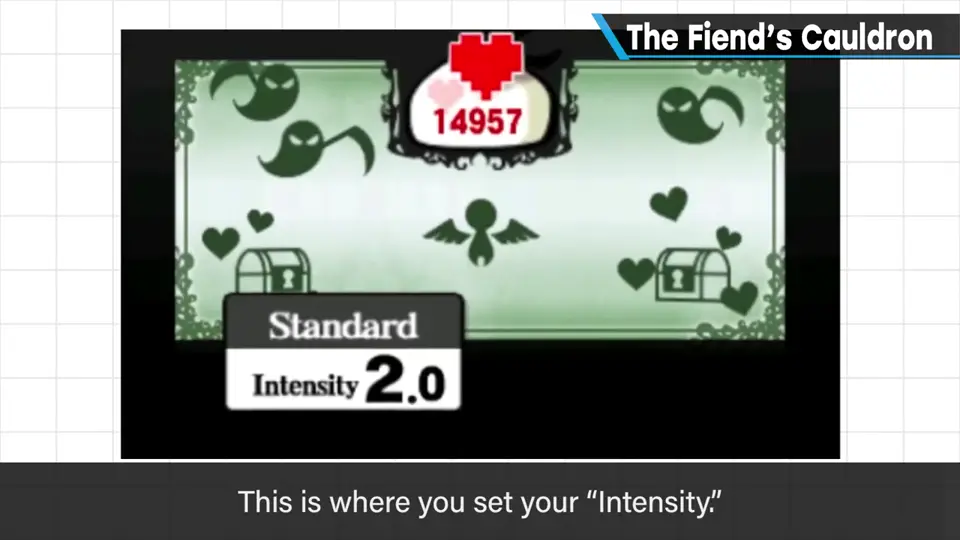
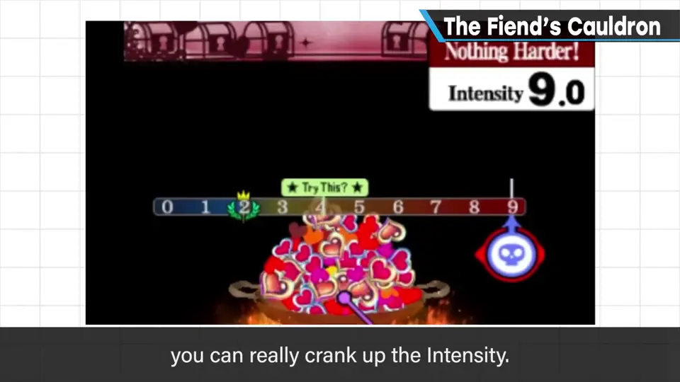
2. 风险越高，回报越大 0:52
- 认真度越高，敌人越有攻击性、攻防更强，必须好好准备、思考战略。
- 反之也更「赚」：通关能得到更多红心、更强的神器和奇迹。
- 失误时釜中的红心会洒掉一些：继续时难度下降，但下的注浪费了一点，好的报酬也更难拿。
- 想降低难度时，也可以付红心降低认真度；降到最低 0.0 几乎就是无敌，通关十拿九稳。
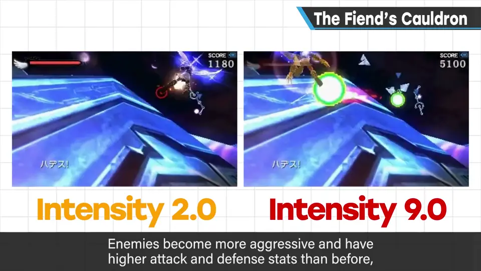
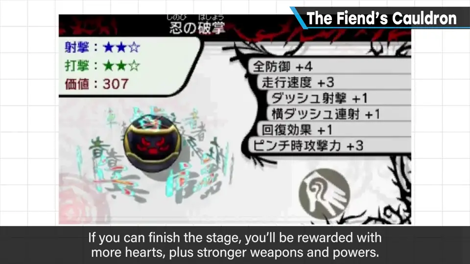
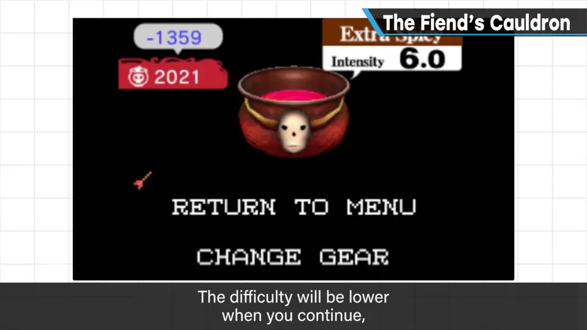
3. 这个系统的优点 1:48
- 风险与回报：高风险就能获得高回报，优点明确。
- 作为难度调整也很新颖：失败时系统自动降低难度，很少卡关。也许免不了一点屈辱感，但没有被一直问「要不要切换到简单模式」那种直白。
- 避免像传统游戏那样一直用 Easy 推进、变成毫无手感的游戏。
- 降到 0 就相当轻松，也能弥补「太难跟不上」。
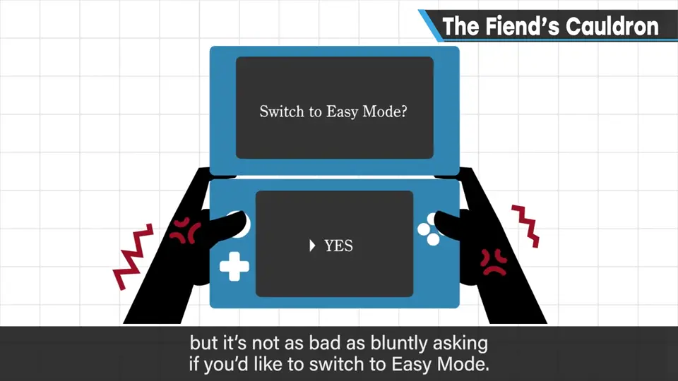
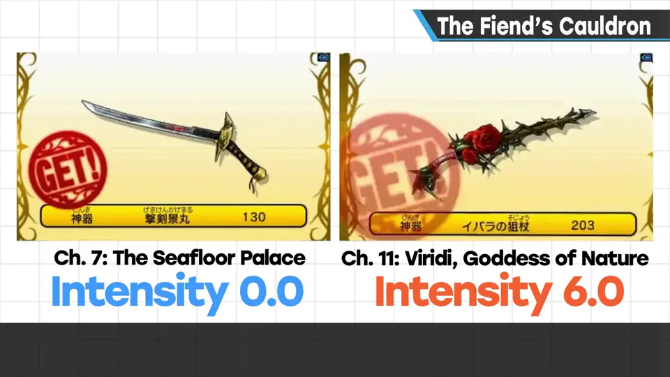
4. 问题与反省 2:36
- 很模糊的一点：手感容易变得太硬。一直被逼到极限的感觉，不太休闲。
- 《帕尔提娜之镜》的地面关卡做得太大、敌人配置太均匀，又没能实现原地复活，有些地方咬合不好。博弈和风险回报带来很有游戏感的玩法，但也会让游戏变严苛——3DS 的小屏幕更是辛苦。
- 「降低认真度难度就会下降」的告知似乎不够。这种机制主要是为初学者准备的；回想制作时确实没顾上，樱井觉得本应在新手引导上多做些。
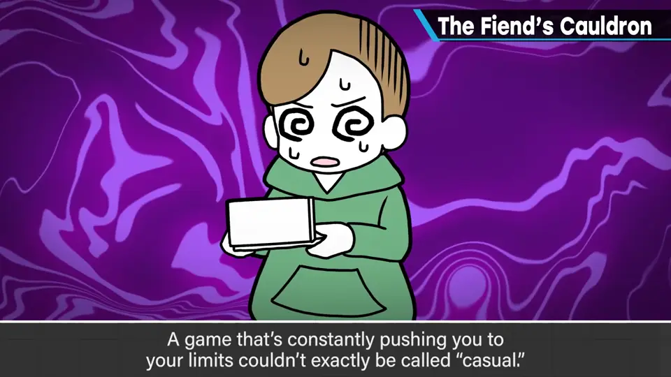
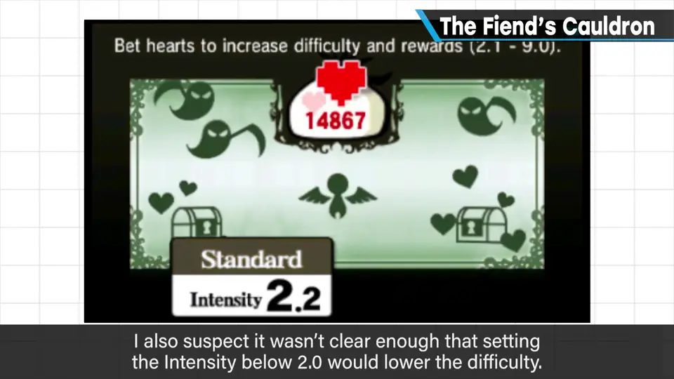
5. 今天仍有参考价值 3:46
现代作品普遍可以在游戏中自由更改难度、没有任何制约——这当然是必需的，也理应如此；但樱井也有想表扬玩得更好的人的心情。
尽管有反省之处，他仍认为恶魔之釜是个犀利的机制，至今仍可作为难度思路的新形式参考。《大乱斗 4》和《大乱斗 SPECIAL》的单人模式也加入了类似要素，但不像《新·帕尔提娜》那样必须去赚，所以没那么重要。樱井还说：真想在家用机上玩《新·帕尔提娜》，谁来移植一下呢。
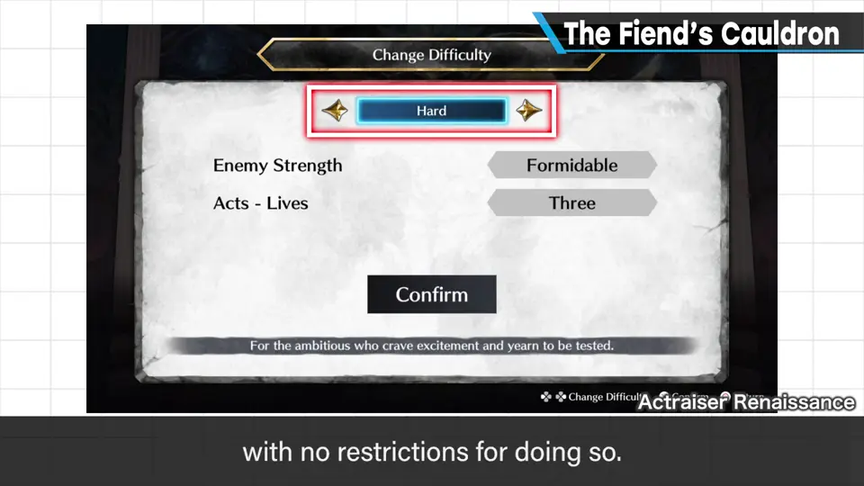
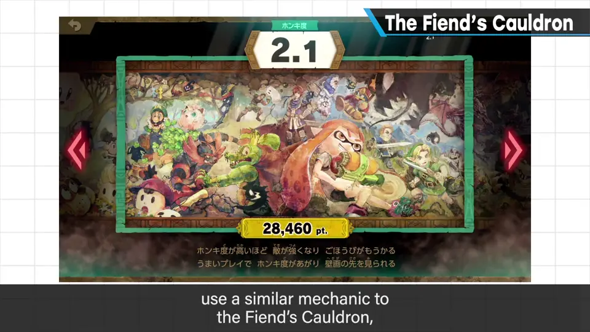
自测题
1. 恶魔之釜如何把难度选择变成风险与回报？
往釜里投入红心提高认真度：难度越高（敌人更凶、更强），通关得到的红心、神器、奇迹越多；失误会洒掉红心、降低难度。 0:34
2. 恶魔之釜作为难度调整有哪些优点？
失败自动降难度，很少卡关，也没有被直白询问「换简单模式吗」的屈辱；避免一直用 Easy 变得没有手感；降到 0.0 又能照顾跟不上的人。 1:52
3. 樱井反省了哪些问题？
手感太硬、不够休闲（地面关卡太大、敌人太密、不能原地复活，3DS 小屏幕更累）；「降低认真度就变简单」的告知不足，本该更好地照顾初学者。 2:36